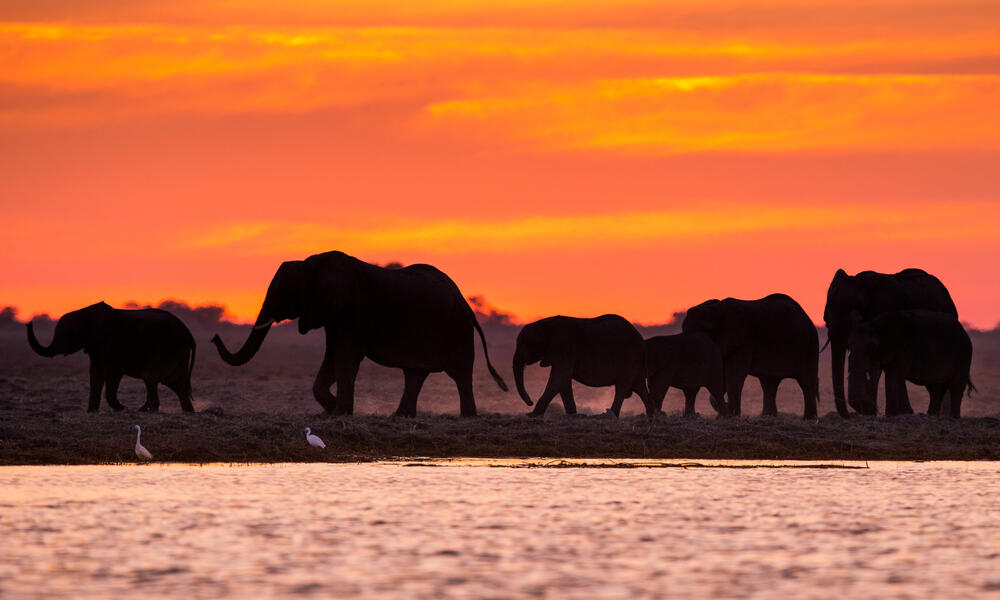

Post Overview
Earlier this year I started as a Graduate Research Fellow in collaboration with the emLab at UCSB and Conservation International SPARC. During my interview and subsequent on boarding process, I learned that the research would be focused on areas of Southern Africa, mainly the KAZA region. For those unfamiliar with the term KAZA TFCA (as I was initially), it stands for Kavango–Zambezi Transfrontier Conservation Area, which is one of the largest landscape conservation areas in the world, spanning Angola, Zambia, Zimbabwe, Botswana, and Namibia (WWF 2016). It’s a beautiful, diverse area that, focuses on sustainably managing the ecosystem, attracts many tourists, and serves as a hub for various research initiatives.

Map of the KAZA TCFA (WWFNamibia 2015).
So, what is the focus of our research in KAZA? Broadly, our questions revolve around the effects of climate change on wildlife corridors, human intrusion into these corridors, and the subsequent impacts on human-elephant conflict. Throughout my data analysis and literature review this quarter, I’ve been contemplating the following questions: In what ways can we ensure that our research is relevant and beneficial for the communities we’re studying and using data from? What factors should we keep in mind when conducting and reporting research on communities that we have no personal connections to?

Elephants in KAZA (WWF 2016).
To dive into these questions, I am drawing inspiration from AI Blindspot (Calderon et al. 2019), which was developed during the Berkman Klein Center and MIT Media Lab’s 2019 Assembly program. This guide was developed with AI data and models in mind, but many of the questions and concepts apply to data and research ethics in general. The authors lay out the potential sources of bias & oversight, or “blind spots”, in four sections: Planning, Building, Deploying, and Monitoring.
Implementing the framework of AI Blindspot
Planning
This initial section guides us to assess the alignment of our research methods with expected outcomes and also addresses potential vulnerabilities and issues related to the safety of data.
Clearly articulate the problem and outcome you are optimizing for.
The rise in human-elephant conflict in KAZA is believed to stem from the impacts of climate change on habitat suitability and human encroachment on wildlife corridors (Kamwi et al. 2015). In this project, we aim to analyze how human activity has altered land cover in wildlife corridors over time and how human presence in relation to the corridors is predicted to change in the future based on current trends. Additionally, we are exploring how the locations of human-elephant conflicts relate to the location of corridors, and what seasonal or climactic variables have the most influence on conflict rates. Results from this research can help inform local communities about potential future dangers to them from elephants, and how their activities are influencing these conflicts.
Have you engaged with affected communities? Subject matter experts?
Yes, we have collaborators at the University of Namibia who have been engaging in this field of research for a while. They have conducted village interviews to collect data on human-wildlife conflicts.
Abusability
While this research can help further our understanding of human-elephant conflicts and their developments, it’s critical to acknowledge the dual-edged nature of reporting this information. It is possible that government officials could use these findings to implement changes in community activities, potentially restricting access to essential resources. This raises concerns about the responsible use of this data and research outcomes.
Privacy
Personal information from the conflict interviews has not been recorded, so people can retain anonymity. When it comes to publishing wildlife research, a major concern revolves around determining who has access to the data due to the potential for malicious use. A majority of elephant data cannot be made publicly available since there are poachers who will use the data for ill intentions.
Building
This second section asks questions that expand on how local communities are impacted by our research.
Is this research accessible to those who are the most affected by it? Do they trust it?
While we do have conflict surveys, I think it would be beneficial to consider conducting a follow-up survey in the same villages once the project results are available. This additional survey would help to gauge the level of trust in our analyses—assessing whether the community understands the analysis process, cares about the results, and finds them consistent with their personal observations of human-elephant conflicts. This approach adds an additional layer of community engagement and ensures that our research is not only informative but incorperates the experiences of those directly impacted.
How rigid should we be when developing our future projections of human-elephant conflict?
Various model developments may yield projections that are either lower than actual future impacts, potentially providing a false sense of comfort, or significantly higher than actual future impacts, leading to unnecessary anxiety or harsher regulations.
Deploying
The third section focuses on the actual performance of AI models and how changes in data might not be accounted for. I have modified and compiled their questions in this section to think about indigenous data and what we might consider to be “non-traditional” data.
How might our model not accurately reflect people’s local knowledge and personal experiences with changes in human-elephant conflict?
We are assuming that increased rates of conflict are due to human encroachment on corridors, but what is not considered in our data is the specific ways and reasons that people’s movement is changing. We have reports of human-elephant conflict, but not the specific information on how the conflict came about. Have increases in reports of conflict occurred because there has been an actual increase in conflict events, or has conflict reporting and recording become common? Are changes in human activity influenced by factors of climate change as much as elephant activity is? We cannot reliably integrate lived experiences into spatial suitability and resistance modeling, but this data can and should be considered when making conclusions from the modeling.
Oversight
Finally, we must continue to address oversights in our modeling. Continuing from the ideas in the previous section, it is imperative that we work closely with our local collaborators and gain further insight into how our research can benefit the local communities.
In what ways can we improve our communication with those in affected communities and those who have more expertise in the area?
Currently, we are meeting with our collaborators in Namibia less often than we should be, but this is more of an issue of conflicting schedules and time differences. We are also still figuring out how to best integrate our research interests with theirs, but we have made it clear to them that if any of our research directions do not align with their priorities, we will not continue to pursue them. A significant portion of the data necessary for our research comes directly from our collaborators. We are grateful that they trust us with this data and we will only be using the data how they see fit.
Conclusions
Reflecting on the considerations discussed, here are the key takeaways that will guide our ongoing research developments:
Potential Community Impact
This research pertains to the daily lives of people within their community. We need to be contingent that while we are the ones conducting the research, these results do not have a personal impact on us.
Local Knowledge
As external researchers, our goal is to draw conclusions about how climate change and human movement are altering wildlife corridors in KAZA. However, we cannot make conclusions without inside perspectives. All analyses and conclusions will undergo approval by our collaborators.
Relevance
It is essential that this research continues to be relevant to the people it directly affects. We must explore ways in which this research can be beneficial to KAZA communities.
References
Citation
@online{muir2023,
author = {Muir, Sam},
title = {Ethical {Challenges} in {Investigating} {Human-Elephant}
{Conflict}},
date = {2023-12-10},
url = {https://shmuir.github.io/projects/2023-12-10-research-ethics-kaza/},
langid = {en}
}